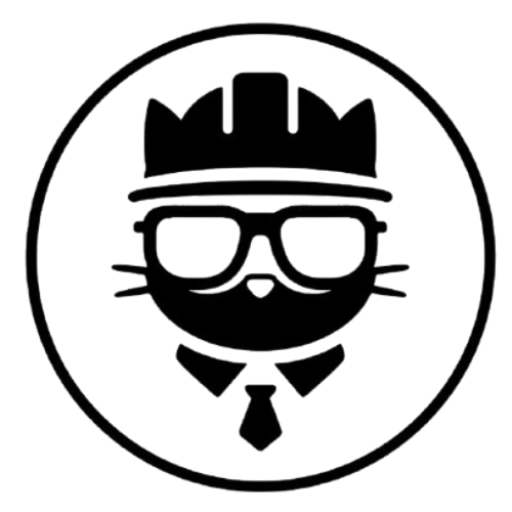

Somos SST - WappyClub
Token de Seguridad (JWT) de WAPPY
Carpeta Local Sincronizada
Seleccionar...
Desconectado
Conectar
Registro de Actividad
Listo para iniciar. Por favor configure su token y carpeta.